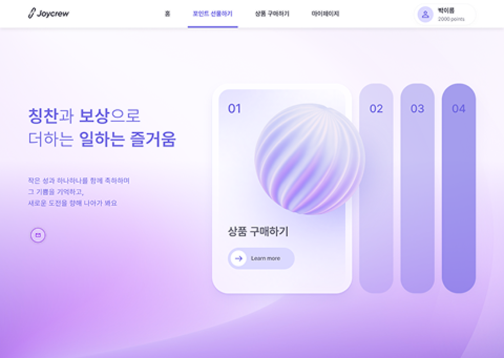

튜토리얼 RAG를 평가하고 관찰할 수 있는 CloudOps RAG로 확장하기
Hit@k와 MRR, threshold fallback, answer evaluation, failure taxonomy, FastAPI serving, dependency timeout, regression gate를 하나의 lifecycle로 연결합니다.
글 읽기Start here
Latest
50Ω 선로의 의미와 impedance가 달라질 때 reflected wave가 필요한 이유를 경계조건에서 설명합니다.
Frequency 자체보다 electrical length와 edge rate가 중요한 이유를 회로 가정의 경계에서 살펴봅니다.
AlGaN/GaN 계면의 2DEG가 어디서 오고, HEMT가 이를 어떻게 제어하며, 실제 RF 성능을 무엇이 제한하는지 살펴봅니다.
Gate electric field가 p-type 표면을 depletion과 inversion으로 바꾸고 Source·Drain 사이의 channel과 current를 제어하는 과정을 살펴봅니다.
Carrier diffusion에서 시작해 depletion region과 built-in potential, forward·reverse bias의 전류가 만들어지는 과정을 연결합니다.
Energy Band, carrier, doping과 Fermi Level이 반도체의 전도도를 어떻게 바꾸는지 연결해 살펴봅니다.
전하에서 시작해 전계와 전위, 전압과 전류가 어떻게 연결되는지 살펴보고 반도체 소자에서 왜 중요한지 정리합니다.
Selected projects

JoyLab Founder로 기업용 포인트 기반 복지·리워드 SaaS를 기획하고 개발했습니다. 포인트·결제 백엔드와 EKS 배포·모니터링 구조를 구현하고 실제 기업 베타 테스트로 멀티테넌트 운영 경계를 검증했습니다.
Topics
About
Software Engineer · Backend / Cloud / AI Systems
JoyLab에서 기업용 포인트 기반 복지·리워드 SaaS의 백엔드와 AWS EKS 인프라를 구축했습니다. 현재는 CloudOps RAG와 AWS 운영 사례를 만들고 기록하고 있습니다.